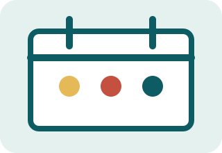
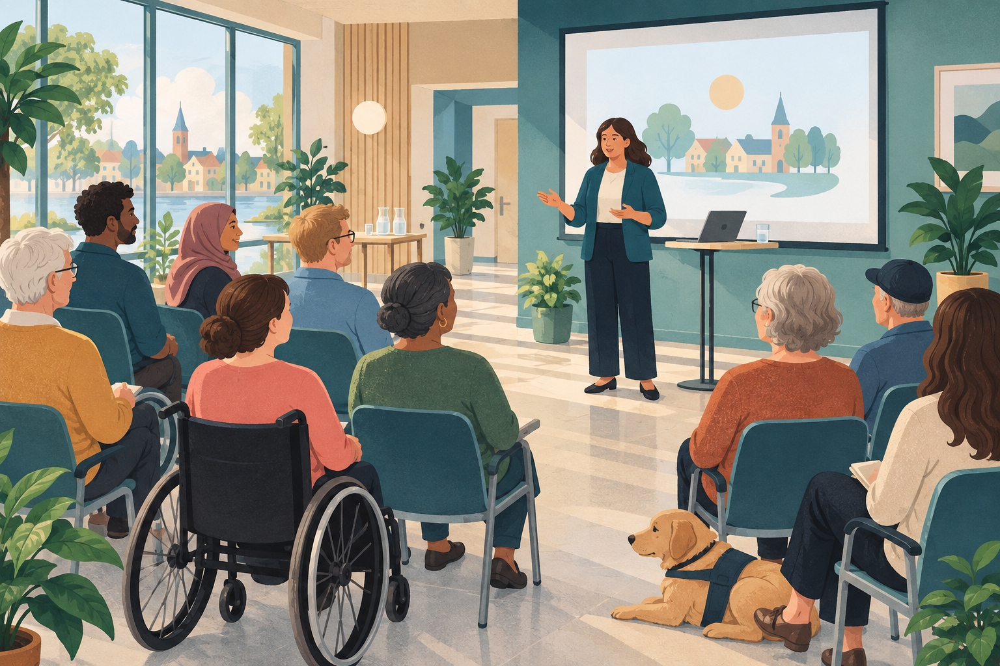

Aktuellt
Det här händer i Ådala
Digital hjälp på tisdagar
Ta med din telefon eller dator. Våra vägledare hjälper dig med kommunens e-tjänster. Under hösten erbjuder vi också extra stöd för dig som vill lära dig mer i lugn takt.
Nya öppettider

Från oktober har vi öppet till klockan 18 på torsdagar. Övriga vardagar stänger vi 16.
Träffa en energirådgivare
Få oberoende råd om din energianvändning. Boka tid via servicecentret.

Kostnadsfritt
Informationsträff om kommunens digitala tjänster
Vi visar hur du hittar, använder och får hjälp med våra vanligaste e-tjänster.
Anmäl dig till informationsträffenKontakta oss
Telefon: 010-123 45 67
E-post: service@adala.example
Besök servicecentret
Torget 4, Ådala
Vardagar 9–16, torsdagar till 18